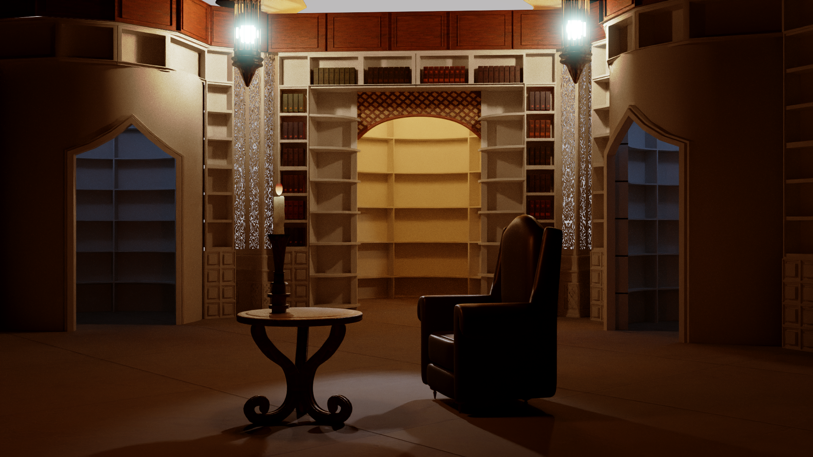
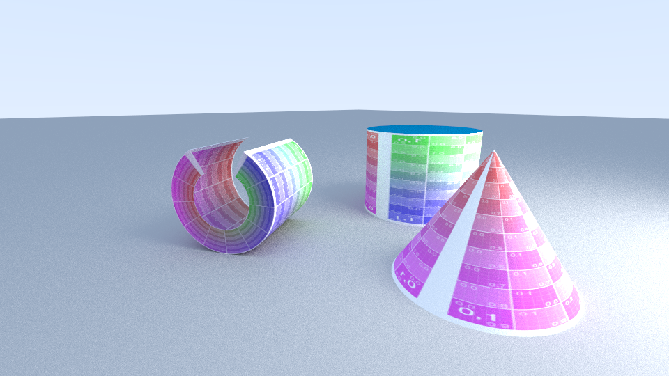
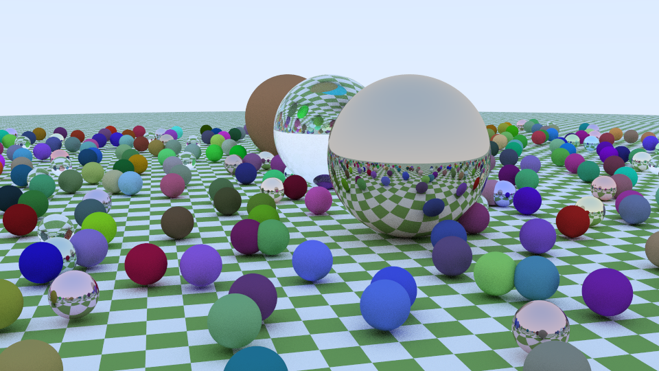
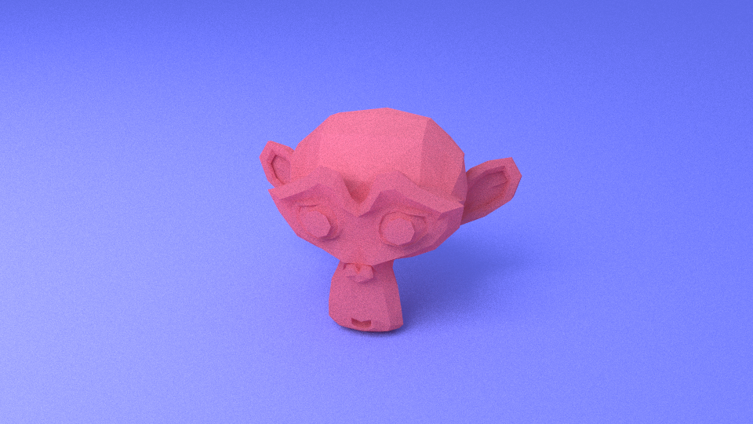
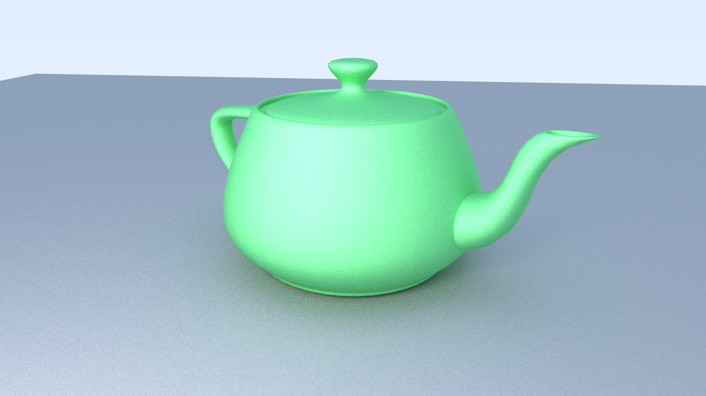
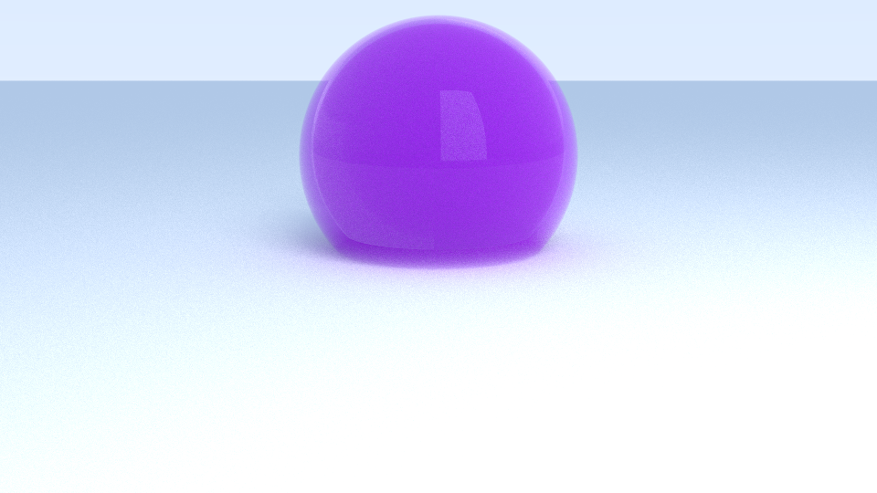

This demonstrates several of the conic sections I implemented in the renderer.

This example shows lighting with an HDRI image, as an experiment. It is extremely noisy, because the HDRI has a very sharp light source. I hope to someday implement importance sampling to control this noise.

This is an example taken from Peter Shirely's book, "Raytracing in One Weekend", which I initially followed. I found it to be a useful example for benchmarking my BVH implementing.

Blender's Suzanne Monkey mesh -- demonstrating the mesh rendering capabilites.

The Utah teapot -- illustrating that smooth shading and loading normals from an OBJ file also work correctly.

And finally, a render illustrating the volumetic capabilities.
